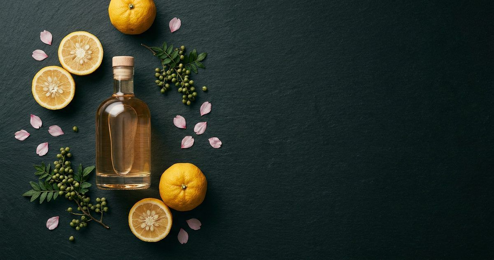

World Gin Awards
日本受賞ジン完全総覧 2019-2026

日本のクラフトジン界に2つの歴史的快挙が訪れました。2024年 Classic Gin 部門世界最高賞「ニセコohoro GIN Standard」、そして2025年 Contemporary Style Gin 部門世界最高賞「松井 白兎プレミアム」。日本勢が2年連続で部門別の世界最高賞を獲得した2024-2025年を中心に、2019年以降の全受賞銘柄、部門別解説、IWSC・SFWSC・TWSCとの比較、受賞蒸溜所のストーリー、買い方・楽しみ方までを完全総覧します。
最終更新: 2026年5月9日 ／ 出典: World Gin Awards 公式 worldginawards.com、各蒸溜所公式リリース、Gin-DB一次ソース確認データ
受賞したジンを買う
この記事で取り上げた銘柄のうち、国際コンテストの受賞歴があり、公式希望小売価格が確認できているものだけを載せています。編集部の主観による順位づけはしていません。掲載外の銘柄も、記事中のリンクから各銘柄ページを開けば購入先を確認できます。
PR ／ アフィリエイトリンクを含みます。
【最新】World Gin Awards 2026 の日本勢
2026年、日本勢は22件入賞しました（各部門の日本最高賞にあたる Country Winner が6件、Silver が12件、Bronze が4件）。Country Winner は Gold の中から選ばれるため、この6件はいずれも Gold も同時に獲っています。
ただし2026年は、全部門を通じて日本勢の「World's Best」（部門別の世界最高賞）はありませんでした。本記事が扱う2024年 ohoro GIN Standard（Classic Gin部門）、2025年 白兎プレミアム（Contemporary Style Gin部門）と続いた部門別世界最高賞は、2026年は途切れています。
- COUNTRY WINNER GOLD季の美 京都ドライジン京都蒸溜所（京都府）／ Classic Gin 部門 日本最高賞・金賞
- COUNTRY WINNER GOLDLAST ELYSIUM東京リバーサイド蒸溜所（東京都）／ Contemporary Style Gin 部門 日本最高賞・金賞
- COUNTRY WINNER GOLDのとジン氣（NOTO JIN KI）TL Pearce蒸溜所（千葉県野田市）で受託蒸溜／ London Dry Gin 部門 日本最高賞・金賞
- COUNTRY WINNER GOLDTogedama Chichibu Single Cask Strength武蔵野蒸留所（埼玉県）／ Matured Gin 部門 日本最高賞・金賞
- COUNTRY WINNER GOLD季の美 勢（KI NO BI SEI）京都蒸溜所（京都府）／ Navy Gin 部門 日本最高賞・金賞
- COUNTRY WINNER GOLDTHE HERBALIST YASO GIN YUZU越後薬草蒸留所（新潟県）／ Signature Botanical 部門 日本最高賞・金賞
- SILVER棘玉（TOGEDAMA）Contemporary Style Gin 部門 ／ 武蔵野蒸留所（埼玉県）
- SILVERTHE HERBALIST YASO GIN EXTRA HERBContemporary Style Gin 部門 ／ 越後薬草蒸留所（新潟県）
- SILVERクラフトジン瀬戸内 -檸檬-Contemporary Style Gin 部門 ／ SETOUCHI DISTILLERY（広島県）
- SILVERクラフトジン瀬戸内 -甘夏-Contemporary Style Gin 部門 ／ SETOUCHI DISTILLERY（広島県）
- SILVER京和漢 DRY GIN FOREST OF KYOTOContemporary Style Gin 部門 ／ 森の京都蒸溜所（京都府）
- SILVERKiyokawa Japanese Mountain GinContemporary Style Gin 部門 ／ Kiyokawa Farm Distilleries
- SILVERKkitteki Spirits MashioContemporary Style Gin 部門 ／ DB Brewery
- SILVERORIGIN FLOWER GINContemporary Style Gin 部門 ／ 西酒造（鹿児島県日置市）
- SILVERKubota Gin OriginContemporary Style Gin 部門 ／ 生産者の記載なし
- SILVERORIGIN WHITE GINFlavoured Gin 部門 ／ 西酒造（鹿児島県日置市）
- SILVERTHE HERBALIST YASO GIN ORANGESignature Botanical 部門 ／ 越後薬草蒸留所（新潟県）
- SILVERORIGIN PLUM GINSloe Gin 部門 ／ 西酒造（鹿児島県日置市）
- BRONZELAST EN -燕-Contemporary Style Gin 部門 ／ 東京リバーサイド蒸溜所（東京都）
- BRONZEAmrta SemishigureContemporary Style Gin 部門 ／ GEEKSTILL
- BRONZEのとジン CHA-CHA-CHAContemporary Style Gin 部門 ／ TL Pearce蒸溜所（千葉県野田市）で受託蒸溜
- BRONZENaturadistill Native Japanese Botanical GinSignature Botanical 部門 ／ naturadistill（福島県）
出典: World Gin Awards 公式（worldginawards.com）各部門の受賞ページ。年ごとの一覧は受賞ジンの年表にまとめています。
1. World Gin Awards（WGA）とは
World Gin Awards（以下WGA）は、英国のメディア企業 The Drinks Report が運営する世界最大級のジン専門コンテストです。同社はWorld Whiskies Awards、World Vodka Awards、World Liqueur Awards等もシリーズ展開しており、スピリッツ業界における権威性が確立しています。WGAは2014年以来、毎年開催されており、業界では「ジン界のオスカー」とも呼ばれる存在です。
WGAの公式サイトはworldginawards.com。毎年12月〜1月にラウンド1（部門別Gold/Silver/Bronze）が発表され、2月にラウンド2（Country Winner）、3月にFinal（World's Best）が公表されるという、3段階構成のコンテストです。日本勢にとっては「世界最高賞」と「Country Winner」がメディア露出最大の節目となっています。
WGAの権威性を裏付ける要素は3つ。①ブラインド審査（銘柄名・メーカー名を隠して審査）、②国際審査員団（業界バイヤー、バーマネージャー、ジャーナリスト等）、③毎年継続的な開催（1年限りでない実績）。これらにより、世界の流通バイヤー・酒販店が「WGA Gold」「Country Winner」「World's Best」のラベルを商品選定の参考に活用しています。
2. 受賞のヒエラルキーと審査の仕組み
WGAの受賞ヒエラルキーは大きく以下の3段階。それぞれが何を意味するかを正確に理解することは、ラベルを読むうえで重要です。
① Gold / Silver / Bronze（メダル：ラウンド1）
各部門で一定基準を超えた銘柄に与えられる絶対評価のメダル。何銘柄でも該当すれば受賞でき、上位入賞数は限定されません。Goldは審査員の高い満場一致がないと出ない最上位メダルで、ジン業界では「Gold以上は世界水準」と認識されています。
② Country Winner（国別代表：ラウンド2）
各部門でGoldを獲得した銘柄の中から、その国を代表する1銘柄として選ばれるもの。たとえば「Japan Country Winner London Dry Gin」は、その年の日本のロンドンドライジンで最も評価された1本を意味します。「Country Winner Gold」と表記されることが多く、これは「Goldメダル＋国別代表」のダブル獲得です。
③ World's Best（部門別世界最高賞：Final）
各部門のCountry Winnerの中から、世界の頂点として選ばれる1銘柄。Classic Gin部門の World's Best、Contemporary Style Gin部門の World's Best、London Dry Gin部門の World's Best、Old Tom Gin部門の World's Best等、部門ごとに「世界最高」が決まる仕組みです。
重要な注釈:「World's Best」はカテゴリ別の世界最高賞であり、全カテゴリ総合の単一最高賞ではありません。「日本のジンとして史上初」という表現は公式裏付けが取れないため、本サイトでは使用していません。一方「日本勢が2024 Classic / 2025 Contemporary で2年連続部門別世界最高賞」は事実です。
3. WGAの主要部門解説
WGAでは複数のスタイル別部門があり、それぞれで独立して世界最高賞が決まります。日本勢に関係する主要部門を解説します。
Classic Gin 部門
ジュニパーベリーを中心とした古典的なドライジン。歴史的なロンドンドライ・スタイルを継承する伝統派の枠組みです。日本勢ではohoro GIN Standard（ニセコ蒸溜所）が2024年に世界最高賞を獲得した部門。Classic部門は世界の老舗銘柄が多くひしめく激戦区で、ここでの世界最高賞獲得は伝統的ジンの本場（英国・スペイン・イタリア等）の老舗を破った象徴的な意味を持ちます。
Contemporary Style Gin 部門
ジュニパー以外のボタニカルが主役級に立つ現代的なジン。和素材を多用するジャパニーズクラフトジンの主戦場です。白兎プレミアム（松井酒造）が2025年に世界最高賞、香の雫 KANOSHIZUKU（養命酒製造）が2024年に Country Winner Goldを獲得しています。日本勢のWGA受賞銘柄を見ると、Contemporary部門での実績が突出して多く、和素材主役型ジンが世界の審査員に高く評価されている明確な傾向です。
London Dry Gin 部門
EU規則「London Dry Gin」基準（人工香料・甘味添加禁止、最低度数37.5%以上、すべてのフレーバーは蒸留時に付与等）に準拠した銘柄。Nozawa Gin（野沢温泉蒸留所）が2024年にCountry Winner Gold、SAKURAO GIN HAMAGOU（サクラオB&D）が2021年にGold＆Country Winnerを獲得。京都蒸溜所の季の美もこの部門での Silver受賞が複数年あります。
Old Tom Gin / Aged Gin / Flavoured Gin / Signature Botanical 部門
樽熟成ジン（Aged Gin）、フレーバージン（Flavoured Gin）、特定ボタニカルを主役に据えたジン（Signature Botanical Gin）など、専門部門が複数あります。ohoro GIN Limited Edition ニホンハッカは2025年 Signature Botanical部門で Country Winner Gold、Shiso Gin（野沢温泉）は2024年 Flavoured Gin部門で Country Winnerを獲得。和素材を主役に据える「Signature Botanical部門」は、日本勢の強みを発揮しやすい区分です。
Navy Strength Gin / Genever / その他
57%以上の高度数（Navy Strength）部門、オランダ伝統のジュネバ部門も存在しますが、日本勢のWGA受賞実績は2025年時点ではまだ限定的です。今後、紅櫻蒸溜所の9148 #0303 NAVY STRENGTH（57%）等の挑戦が期待される領域。
4. 2025年: 白兎プレミアムが Contemporary 世界最高賞
白兎プレミアム（マツイ ジン HAKUTO Premium）
松井酒造合名会社（鳥取県倉吉市）／ 47% ／ 700ml ／ ¥3,960（税込・公式希望小売）
明治43年（1910年3月29日）創業の老舗・松井酒造合名会社が手掛ける看板銘柄。基本9種ボタニカル（ジュニパー・鳥取県産梨・コリアンダー・オレンジピール・ゆずピール・和山椒・玉露・サクラ・ブラックペッパー）に、プレミアム5種（非公開）を加えた合計14種で構成。鳥取県産の梨を主役素材に据えるアプローチが、世界の審査員から「他にない香り」として高く評価されました。
白兎プレミアムは過去6年連続でWGA入賞という地道な改良の歴史を持ちます: 2020 Gold → 2021 Bronze → 2022 Silver → 2023 Bronze → 2024 Gold → 2025 Contemporary Style Gin部門 World's Best。これは10年近い研鑽がついに世界最高賞という頂点に到達した象徴的な銘柄。一発屋ではなく、継続的な品質改善が花開いた事例として、日本のクラフトジン業界全体に勇気を与える受賞でした。
受賞時の海外メディア反応
2025年2月のCountry Winner発表時、英国の業界誌The Drinks Reportは「Japan continues to excel in the contemporary category」（日本はコンテンポラリー部門で卓越し続けている）と評し、和素材主役型ジンが世界の主流の一角を占めるという分析記事を掲載。Final発表（3月）以降は、日本国内でもJ-CASTニュース、酒販ニュース、DIME等が大きく取り上げました。
価格据え置きという英断
世界最高賞獲得後も、松井酒造は白兎プレミアムの希望小売価格¥3,960（税込）を維持しました。世界最高賞ジンとしては極めて手頃な価格帯で、いわば「世界水準のジンを家庭で気軽に楽しめる」状況を保ったのです。これは「日本ジンの良心」とも言える姿勢で、業界紙でも好意的に評されています（市場価格は変動の可能性があります）。
5. 2024年: ohoro GIN Standard が Classic 世界最高賞
ohoro GIN Standard（ニセコ蒸溜所）
株式会社ニセコ蒸溜所（北海道虻田郡ニセコ町）／ 47% ／ 700ml ／ ¥4,500（税別・公式希望小売）
2019年2月創業、2021年10月グランドオープンの新興蒸溜所。創業からわずか5年で世界最大級のジンコンテスト Classic Gin 部門の頂点に立ちました。北海道ニセコ町の湿原に自生するヤチヤナギとニホンハッカを主役素材に据え、ニセコ安比岳の高品質軟水で蒸留。13種ボタニカル設計（ヤチヤナギ・ニホンハッカ・ジュニパー・コリアンダー・アンジェリカルート・オリスルート・リコリス・カモミール・レモン・オレンジ・柚子・ライム・グレープフルーツ）で、47%の高アルコール度数に仕上げています。
ニセコ蒸溜所公式は本銘柄を"clear and smooth with a solid core and light citrus notes"（透明感のある滑らかさ、しっかりとした骨組みと軽い柑橘ノート）と表現。同年に ISC 2024 Trophy / Double Gold、SFWSC 2024 Double Gold も獲得しており、複数コンテスト同時受賞という分かりやすい裏付けを持ちます。さらに2023年のCountry Winner Gold（Classic Gin日本代表）から1段階上がる形での世界最高賞獲得は、新興蒸溜所の階段を着実に上った成果です。
2024年 受賞時の意義
ニセコ蒸溜所は2019年創業。初出品から数年で世界最高賞という圧倒的速度は、日本のクラフトジン業界全体への自信となりました。当時、海外メディアでは「The new face of Japanese craft gin」（日本クラフトジンの新顔）として大きく取り上げられ、その後の日本勢の躍進の起点となった象徴的な受賞です。
ヤチヤナギという独自素材
ohoro GIN Standardの個性を決定づけるのが、北海道湿原に自生するヤチヤナギ（ヤマモモ科）。和名は「沢谷柳」で、湿地帯特有の樹木です。葉と若枝に独特の樹脂的な芳香があり、北海道の蝦夷地時代から薬用・香料として使われてきました。本州以南では入手困難な北海道固有の素材を主役に据えることで、グローバル市場でも他に類のない香りの個性を確立。
6. 「日本勢2年連続部門別世界最高賞」の意義
2024年のニセコohoro GIN StandardがClassic Gin部門世界最高賞を獲得した直後、2025年に松井白兎プレミアムが Contemporary Style Gin部門世界最高賞を獲得したことは、ジャパニーズクラフトジンが「クラシック（伝統的なドライジン）」と「コンテンポラリー（現代的な和素材主役）」の両極で世界の頂点に立ったことを意味します。
なぜ「両極制覇」が重要か
世界のジン市場では、伝統的なロンドンドライスタイルを愛する層と、革新的なコンテンポラリースタイルを支持する層に二分される傾向があります。Classic Ginで世界一になることは「伝統の本場・英国の老舗を超えた」という意味を、Contemporary Style Ginで世界一になることは「世界のクラフト革新派の中で最も独創的」という意味を持ちます。日本勢は2024-2025年の連覇で、この両極の評価を獲得。「ジャパニーズジン」という名称が、世界のジン市場で独自の地位を確立した瞬間とも言えます。
蒸溜所規模・歴史の対比
面白いのは、2連覇を達成した2蒸溜所の対照性です。
- ニセコ蒸溜所: 2019年創業、ジン専業の若い蒸溜所。北海道の自然素材を主役に据えた革新派
- 松井酒造合名会社: 1910年創業、120年近い老舗酒造の蒸溜部門。鳥取の地域ブランドを背負う伝統派
新興×老舗、北海道×山陰、若手単独×老舗酒造、と対照的な蒸溜所が連覇したことで、「日本のクラフトジン全体の底力」が証明された形になりました。これは特定の1蒸溜所の偶然ではなく、日本のジン業界全体の質が世界水準に達したことを示しています。
引用に際しての正確な表記
本サイトでは「日本勢2年連続部門別世界最高賞」という表現を使用し、「日本のジンとして史上初」「全カテゴリ世界一」のような検証不能な表現は使用していません。引用時は前年は別蒸溜所であることを明記推奨（2024 ニセコ Classic / 2025 松井 Contemporary）。これは Gin-DBの「嘘ゼロ」原則に基づく姿勢です。
7. 2024-2025 日本勢 Gold・Country Winner 全銘柄
2025年
| 受賞 | 銘柄 | 蒸溜所 | 部門 |
|---|---|---|---|
| World's Best | 白兎プレミアム | 松井酒造 | Contemporary Style Gin |
| Country Winner | Matsui Gin Hakuto Premium | 松井酒造 | Contemporary Style Gin |
| Country Winner Gold | ohoro GIN Limited Edition ニホンハッカ | ニセコ蒸溜所 | Signature Botanical |
| Gold | 香の森 KANOMORI | 養命酒製造（駒ヶ根工場） | Contemporary Style Gin |
| Gold | ROKU〈六〉47% | サントリー大阪工場 | Classic Gin（Japan代表） |
2024年
| 受賞 | 銘柄 | 蒸溜所 | 部門 |
|---|---|---|---|
| World's Best | ohoro GIN Standard | ニセコ蒸溜所 | Classic Gin |
| Country Winner | ohoro GIN（Standard） | ニセコ蒸溜所 | Classic Gin Japan代表 |
| Country Winner Gold | 香の雫 KANOSHIZUKU | 養命酒製造（駒ヶ根工場） | Contemporary Style Gin Japan代表 |
| Country Winner Gold | Nozawa Gin | 野沢温泉蒸留所 | London Dry Gin Japan代表 |
| Country Winner | Shiso Gin | 野沢温泉蒸留所 | Flavoured Gin Japan代表 |
| Gold | Classic Dry Gin | 野沢温泉蒸留所 | Contemporary Style Gin |
| Silver | 季の美 京都ドライジン | 京都蒸溜所 | London Dry Gin |
| Silver | 季の美 勢（KI NO BI SEI） | 京都蒸溜所 | London Dry Gin |
※ 受賞情報はWorld Gin Awards公式と各蒸溜所公式リリースで一次ソース確認済み（Gin-DB嘘ゼロ準拠）。「Country Winner」は国別代表、「Country Winner Gold」はGoldメダル＋国別代表を意味します。
8. 2023年以前の主要受賞史 (2019-2023)
2024-2025の世界最高賞2連覇は、突然訪れたものではありません。2019年以降の継続的なGold受賞の積み重ねが、世界の審査員に「日本ジンの実力」を浸透させていきました。一次ソース確認済みの受賞をまとめます。
2023年
- Country Winner Gold: ohoro GIN Standard（ニセコ蒸溜所、Classic Gin Japan代表）— この実績が翌2024年の世界最高賞への布石に
- Country Winner Gold: 棘玉 TOGEDAMA（武蔵野蒸留所、Japan Country Winner Gold）
- Gold: 季の美 勢（京都蒸溜所、London Dry Gin）
- Silver: 香の雫 40%（養命酒製造、Contemporary Style Gin）— 翌年Country Winner Goldへの飛躍前夜
2022年
- Gold: 白兎-HAKUTO-（松井酒造、Contemporary Style Gin）
- Silver: 白兎プレミアム（松井酒造、Contemporary Style Gin）— 後の2025世界最高賞銘柄
- Gold: 京都蒸溜所製品（Gin部門 90点獲得）
2021年
- Gold & Country Winner: SAKURAO GIN HAMAGOU（サクラオB&D・広島、London Dry Gin Japan代表）
- Silver: ニッカ カフェジン（ニッカ宮城峡、Contemporary Style Gin）
- Bronze: 白兎プレミアム（松井酒造）
2020年
- Gold: 季の美 京都ドライジン（京都蒸溜所）— 日本初のジン専門蒸溜所が世界の評価を獲得した節目の年
- Gold: 白兎プレミアム（松井酒造）— その後6年連続入賞の起点
2019年
- Gold: ニッカ カフェジン（ニッカ宮城峡）— 日本のクラフトジンが世界舞台で評価された初期の重要受賞
9. 受賞蒸溜所の物語
ニセコ蒸溜所：北海道の湿原から世界へ
2019年2月創業。北海道虻田郡ニセコ町ニセコ478-15、雄大な羊蹄山の麓で、地元素材ヤチヤナギ・ニホンハッカ・ラベンダー（北海道ニセコ町産）を主役に据えた銘柄づくりを始めました。創業からわずか5年でWGA 2024 Classic Gin 世界最高賞を獲得し、海外メディアから「日本クラフトジンの新顔」と評されるまでに。蒸溜所見学は予約制で、4-11月¥1,500／12-3月¥2,000という価格で60分のツアーを提供しており、北海道観光の新名所として注目されています。
松井酒造合名会社：明治43年から続く老舗の蒸溜部門
1910年（明治43年）3月29日創業の松井酒造合名会社（鳥取県倉吉市上古川656-1、大阪本社あり）は、もともと焼酎・清酒・ウイスキーを扱う総合酒造会社です。白兎プレミアムは同社の倉吉蒸溜所で生産され、2020 Gold → 2021 Bronze → 2022 Silver → 2023 Bronze → 2024 Gold → 2025 Contemporary Style Gin部門 World's Bestと6年連続でWGA入賞。10年近い研鑽が頂点に到達したストーリーは、業界紙でも「日本ジンの誇り」として繰り返し紹介されています。倉吉蒸溜所は現在見学一時中止中（再開時は公式サイトで告知）。
京都蒸溜所：日本初のジン専門蒸溜所
2014年会社設立、2016年10月「季の美 京都ドライジン」発売。日本初のジン専門蒸溜所（公式表現／ペルノ・リカール公式リリース、The Gin Guild Ginopedia、WHISKY Magazine Japanで確認）として、日本のクラフトジン市場そのものを切り拓きました。WGA 2020 Gold、2023 Gold（季の美 勢）、2024 Silverと長期にわたる安定した国際評価を持ち、「ジャパニーズクラフトジンの古典」とも言える存在。2025年からはペルノ・リカール傘下となり、亀岡新蒸溜所が稼働予定。京都市中京区河原町通二条上るの「The HOUSE of KI NO BI（季の美House）」で見学・体験プログラムを提供しています（水〜日 14:00〜20:00、月・火定休）。
養命酒製造：薬草研究の145年が活きる和ハーブジン
長野県上伊那郡駒ヶ根工場の養命酒製造は、薬味酒「養命酒」（1923年から販売）の老舗。長年の薬草・和ハーブ研究の蓄積をジンに転用したのが「香の森（KANOMORI）」と「香の雫（KANOSHIZUKU）」です。香の雫は2024 Country Winner Gold（Contemporary Style Gin Japan代表）、香の森は2025 Goldを獲得しており、2年連続で部門メダルを獲得。養命酒製造の和ハーブ知見が、クロモジ・カモミール・コリアンダー・ジュニパー等の絶妙なバランスとして結実しています。
野沢温泉蒸留所：温泉地発のクラフトジン
長野県下高井郡野沢温泉村に位置する野沢温泉蒸留所は、2024年WGAで複数の Country Winner / Gold を獲得しました（Nozawa Gin: London Dry Gin日本代表、Shiso Gin: Flavoured Gin日本代表、Classic Dry Gin: Contemporary Style Gold）。3つの異なる部門で同時受賞という快挙は、蒸溜所の設計力の高さを示しています。山椒3種ボタニカル設計の Classic Dry Gin（48%・500ml・¥4,850）が個性派として注目されています。
10. 日本勢の傾向分析（ボタニカル・地理・成長）
傾向1: Contemporary Style Gin に強い
日本勢のWGA受賞銘柄を見ると、Contemporary Style Gin部門での実績が突出しています。和素材（柚子・山椒・玉露・桜・蒸溜所固有のボタニカル）を主役級に据えるスタイルは、世界の審査員にとって「他にない個性」として強く印象に残るためです。2025年世界最高賞の白兎プレミアム、2024年のCountry Winner Gold香の雫、2024 Gold Classic Dry Gin（野沢温泉、48%・3種ボタニカル）など、現代的なボタニカル使いが評価されています。
傾向2: 受賞蒸溜所の地理的分散
受賞蒸溜所は北海道（ニセコ蒸溜所）、長野（野沢温泉、養命酒製造）、京都、大阪（サントリー）、広島（サクラオB&D）、鳥取（松井）、宮城（ニッカ）、埼玉（武蔵野蒸留所）と全国に分散しています。これは「地域固有素材を活かす」ジャパニーズクラフトジンの本質であり、同時に受賞は東京や首都圏の蒸溜所に集中していないこともポイントです。地方の老舗酒造や新興ベンチャーが、地域の自然素材を武器に世界の頂点に立てる土壌が形成されているのが現代ジャパニーズクラフトジンの構造です。
傾向3: 単発の世界最高賞より継続的Gold
ニッカ カフェジン（2019, 2021）、季の美（2020, 2023, 2024）、香の雫/香の森（2023, 2024, 2025）、ohoro GIN（2023, 2024, 2025）、白兎プレミアム（2020, 2021, 2022, 2023, 2024, 2025）など、複数年にわたって連続受賞している蒸溜所が日本勢のコアです。一発屋ではなく、継続的に高品質を維持できる蒸溜所が強い。これは品質管理体制と原料調達の安定性が世界水準にあることを意味します。
傾向4: 受賞前後で価格は急騰しない
「世界最高賞を取ったから即値上げ」というジンは現状ほぼありません。白兎プレミアムは¥3,960、ohoro GIN Standardは¥4,500と、世界最高賞ジンとしては極めて手頃な価格帯を維持しています。「世界水準のジンを世界最低価格帯で味わえる」のが、いま現在の日本勢の魅力です。海外（英国・スペイン・米国等）の世界最高賞ジンは¥8,000〜¥15,000の価格帯が普通であることと比較すると、日本勢のコスパは圧倒的（市場価格は変動の可能性があります）。
傾向5: 和素材の多様化と地域特化
初期の日本ジン（2017年前後）は柚子・山椒・玉露が中心でしたが、近年は地域固有素材の発掘が進んでいます。ヤチヤナギ（ニセコ）、ニホンハッカ（北海道）、月桃・けせん（薩摩）、ハマゴウ（広島）、ピパーチ・カラキ（沖縄）、椿の実（五島）、福来みかん（筑波山麓）、紫蘇（長野・宮崎）、ぶどう山椒（和歌山）など、「100km圏以内の自生素材」を主役にする蒸溜所が増えています。これが世界の審査員から「他にないオリジナリティ」として高く評価される基盤となっています。
11. IWSC / SFWSC / TWSCとの違い
WGAだけでなく、ジンの国際/国内コンテストは複数あります。それぞれの位置づけを正確に理解することで、ラベルの「金賞」「銀賞」を正しく評価できます。
IWSC（International Wine & Spirit Competition）
1969年創設、英国ロンドン拠点。世界最古級のスピリッツコンテストで、ワイン・スピリッツ全般を扱います。100点満点採点で、Gold（95点以上）、Silver Outstanding（90-94点）、Silver（85-89点）、Bronze（80-84点）の評価。WGAと並ぶ国際的な権威があり、ニセコohoro GIN Standardは2024年にIWSC Trophy（部門最高評価）を獲得。京和漢 FOREST OF KYOTOは2025 Gold。
SFWSC（San Francisco World Spirits Competition）
2000年創設、米国サンフランシスコ。北米最大のスピリッツコンテストで、ジン・ウイスキー・ラム・ウォッカ等全カテゴリを扱います。Double Gold（審査員全員Gold）、Gold、Silver、Bronzeの4段階。日本勢ではニセコohoro GIN Standardが2024 Double Gold、京都蒸溜所が複数年Gold、京和漢 FOREST OF KYOTOが2025 Gold等を獲得しています。
TWSC（Tokyo Whisky & Spirits Competition）
2018年創設、東京拠点。日本国内最大のスピリッツコンテストで、ジャパニーズクラフトジンの認知向上に大きく貢献。最高金賞・金賞・銀賞・銅賞の4段階で、TWSC殿堂入り（複数年連続金賞）の制度も設けられています。瀬戸内 檸檬はTWSC 2022/2023/2024 金賞で殿堂入り、油津吟もTWSC殿堂入り。本坊酒造マルス津貫の和美人はTWSC 2024 Best of the Best受賞。
その他の国際コンテスト
ISC（International Spirits Challenge：英国、サントリーROKU〈六〉が2025 "Best Distilled Gin" Trophy受賞）、Mondo Selection（ベルギー：油津吟が2018最高金賞）、Feminalise（フランス女性審査員のみのコンテスト：棘玉が2022 Gold）、Gin Masters（英国Gin Magazine主催：千代むすび 因伯人が2024 Premium部門Master）、LAISC（Los Angeles International Spirits Competition）等、多数のコンテストが存在し、各コンテストの権威性・審査基準は微妙に異なります。複数コンテストでの横断的な受賞歴が、銘柄の品質を最も信頼性高く示す指標です。
12. 受賞ジンを飲み比べる方法
飲み比べセット① 「2年連続世界最高賞」体験セット
最も贅沢な体験。ohoro GIN Standard（¥4,500）＋白兎プレミアム（¥3,960）の2本で、合計約¥8,460で日本勢2年連続部門別世界最高賞を自宅で体験できます。同じ条件（よく冷えたグラス、47%同度数）で、Classic vs Contemporary の対比を試みると、両者の方向性の違いが鮮やかに浮かび上がります。記念日・特別な来客の際に最高峰のおもてなしになる組み合わせ。
飲み比べセット② 「Country Winner Gold」コンテンポラリー比較
2024-2025の香の雫（KANOSHIZUKU）＋ohoro GIN Limited Edition ニホンハッカ＋香の森（KANOMORI）の3本。Contemporary部門の和素材主役ジンが、それぞれどう違うアプローチで世界水準に到達したかを比較できます。養命酒製造の薬草系（香の雫・香の森）と、ニセコ蒸溜所の北海道自生素材系（ニホンハッカ）の対比が興味深い。
飲み比べセット③ 「価格帯別受賞ジン」入門セット
受賞ジンの世界の入り口に。白兎-HAKUTO-（¥1,496、2025世界最高賞蒸溜所のスタンダード版）＋SAKURAO GIN ORIGINAL（市場¥2,200、TWSC 2022 Gold）＋ROKU〈六〉47%（¥4,000税抜、2025 ISC Trophy）の3本で約¥7,700。受賞ジンが3,000円未満からあるという事実を体感できます。
飲み比べの作法
ブラインドテスト風に楽しむなら、3本のラベルを隠して別グラスに注ぎ、家族・友人と当てっこをするのが盛り上がります。少量（10〜15ml）ずつ、ストレート→ロック→ジントニックの順で試すと、受賞ジンが各飲み方でどう振る舞うかの違いが明確になります。グラスは事前に冷凍庫で30分以上冷やすこと。
13. よくある質問（FAQ）
Q1. 「World's Best」は全カテゴリ世界一という意味？
いいえ、違います。「World's Best」はカテゴリ（部門）別の世界最高賞であり、「Classic Gin部門世界最高賞」「Contemporary Style Gin部門世界最高賞」というように部門ごとに決まります。全カテゴリ統合の単一最高賞は存在しません。本サイトでは正確を期すため、必ず部門名を併記しています。
Q2. 「日本のジンとして史上初」と書かれた記事を見たが本当？
WGA公式・蒸溜所公式リリースで「日本のジンとして史上初の世界最高賞」と明示する一次ソースは確認できておらず、本サイトではこの表現を使用していません。一方「日本勢が2024 Classic / 2025 Contemporary で2年連続部門別世界最高賞」は事実です。引用時は蒸溜所名＋部門名を明記する慎重な表現が推奨されます。
Q3. 受賞ジンはどこで買える？
各蒸溜所公式EC、楽天市場、Amazon、リカーマウンテン、酒のやまや、ビックカメラ酒類売場等で購入可能です。世界最高賞獲得直後は一時的に在庫が逼迫することもありますが、現在（2026年5月時点）は概ね通常流通しています。ふるさと納税でも対応する自治体が多数あり、当サイトのふるさと納税ジンページから検索できます。
Q4. WGAの審査はどう行われる？
ブラインド審査（銘柄名・メーカー名を隠した状態）で、世界各国の業界専門家（バーマネージャー、業界バイヤー、酒類ジャーナリスト、マスター・オブ・スピリッツ保持者等）が官能評価を実施。各部門は専門審査員のパネルで構成され、複数回のラウンドを経て最終評価が決まります。詳細な審査要項はWGA公式サイトに掲載されています。
Q5. 過去の受賞ジンが今でも買えるか？
主要な受賞銘柄（季の美、ROKU、ニッカ カフェジン、白兎、ohoro GIN、SAKURAO GIN、香の森・香の雫等）は継続販売中で、現在も入手可能です。一方、限定版（ohoro GIN Limited Editionニホンハッカ、Limited Editionラベンダー、季の美 エディションK/G等）はシリアルナンバー付の限定生産のため、年により入手難度が変わります。
Q6. なぜ日本勢が急に強くなった？
主な理由は3つ。①2014-2017年に複数の専業ジン蒸溜所が誕生（京都蒸溜所2014、サントリーROKU 2017、ニッカ カフェジン 2017、ニセコ蒸溜所2019）し、和素材主役のジン文化が確立。②地域固有素材の発掘が進み、海外勢には模倣困難なオリジナリティが生まれた。③蒸溜技術の世代交代で、若手蒸溜家がコンテンポラリースタイルを志向するようになった。これらが2020年代に結実しています。
Q7. 来年（2026年）以降の注目銘柄は？
本サイトでは予測は控えますが、2025年の躍進蒸溜所として、瀬戸内蒸溜所（檸檬・甘夏が WGA 2025 Gold/Bronze）、京丹後・舞鶴の蒸溜所、和歌山富士白蒸溜所のDOJA等の動向に注目が集まっています。連続受賞している既存蒸溜所（白兎、ohoro GIN、ROKU、香の雫/香の森、季の美）の今後の挑戦も継続的に見守る価値があります。詳細は受賞ジン一覧ページで随時更新されます。
14. まとめ・関連リンク
World Gin Awardsの2024-2025年は、日本のクラフトジン界にとって歴史的な転換点でした。ニセコohoro GIN Standardの Classic Gin 世界最高賞（2024）と、松井白兎プレミアムの Contemporary Style Gin 世界最高賞（2025）。この2つの受賞は、ジャパニーズクラフトジンが「伝統と革新の両極で世界の頂点」に立ったことを意味します。
本記事はあくまで「2026年5月時点の整理」であり、2026年以降のWGA、IWSC、SFWSC、TWSC等での日本勢の活躍は、引き続き当サイトで追っていきます。「世界最高賞ジンを家庭で楽しむ」ことが、これほど現実的になった時代に、この日本に住んでいる幸運を感じる1本を、ぜひ手に取ってみてください。